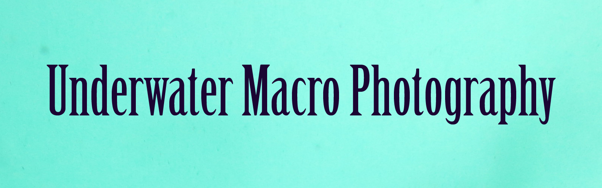
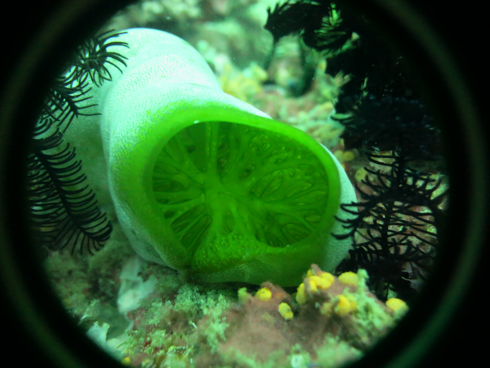
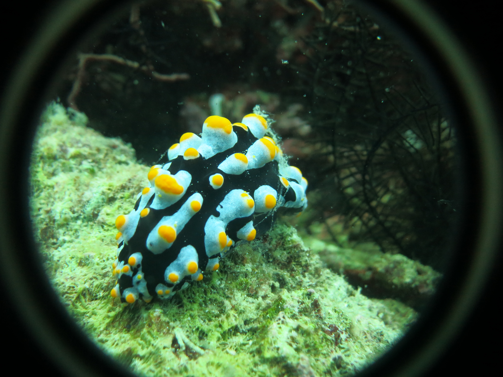
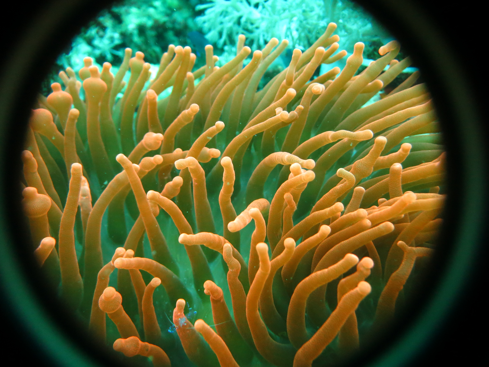
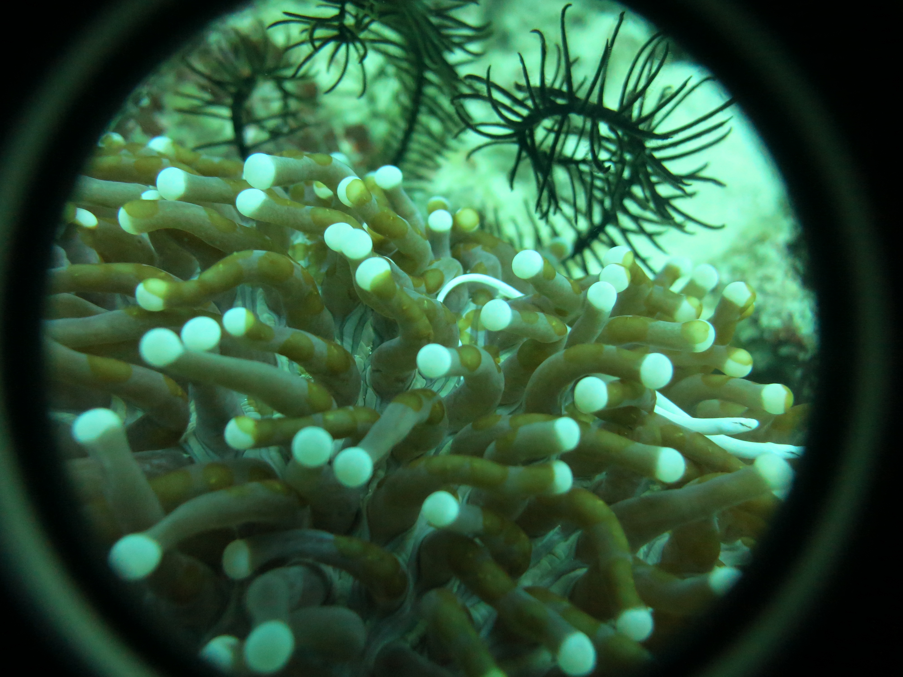

Sponge
Nurdibranch


Anemone
Mushroom eels
The term macro photography refers to taking pictures of small subjects at close range. When taking macro photographs underwater, we are usually getting pictures of small creatures that often go unnoticed by divers. These include some of the most beautiful and colourful creatures in our oceans.
Macro photography forces divers to slow down and observe in much greater detail the endless photo opportunities that surround us while diving. It is not uncommon for discerning underwater macro photographers to confine an entire dive to a small piece of reef due to ample macro opportunities within close proximity to one another.
All of the images shown here were taken using a compact digital camera with a 5x dioptre in Alinao, the Philippines.
Web page last edited by:J